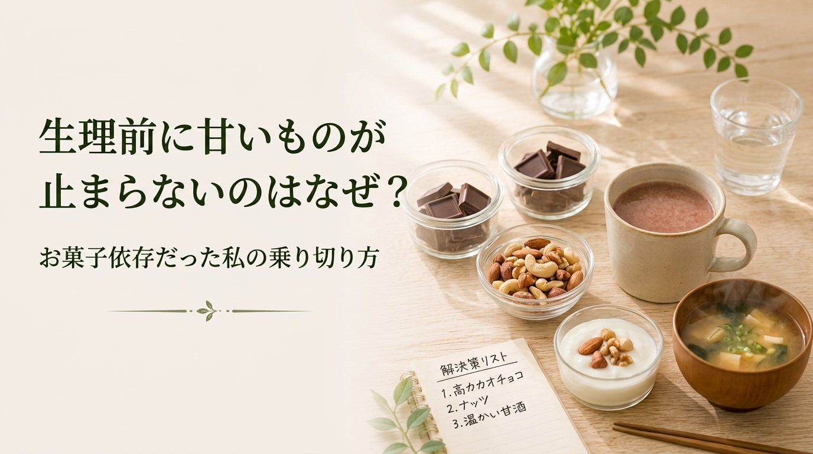

生理前だけ出なくなる、甘いものが止まらない、お腹が張る。毎月おなじ時期に同じことで悩むのは、体質でも意志の弱さでもなく、ホルモンの周期に腸が反応しているからでした。仕組みが分かると、備え方が変わります。
CYCLE

生理前だけ甘いものが止まらないのは意志の弱さではありません。血糖値とセロトニンの変化、腸との関係、そして我慢せずに乗り切るために元看護師が毎月やっている5つのことを紹介します。
生理前の1週間だけお腹が張って出なくなる。それは体質ではなく黄体ホルモンが腸の動きをゆるやかにするために起きる変化。元看護師さきが仕組みと、その週だけ変えている食事・水分のとり方を書きました。
← 記事一覧へ